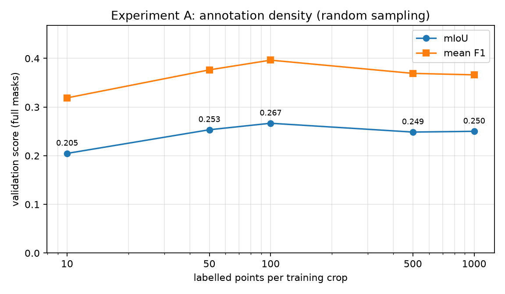
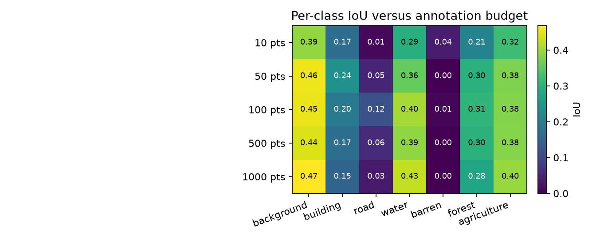
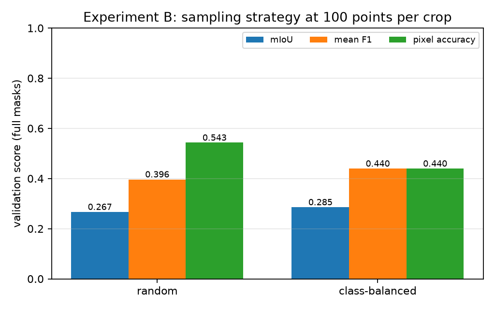
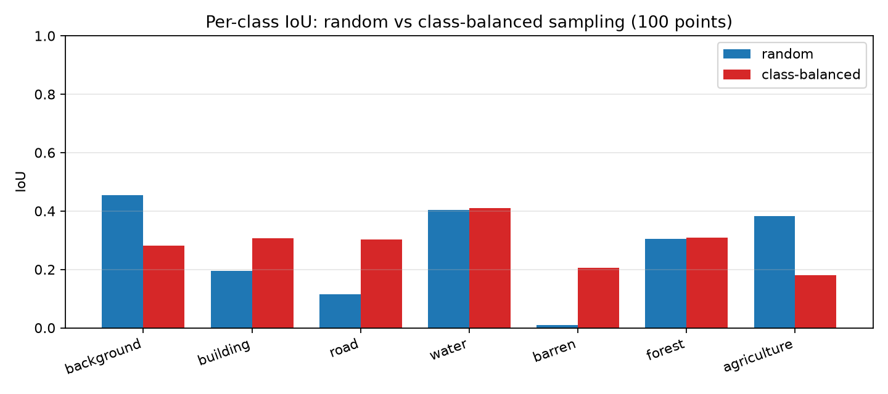
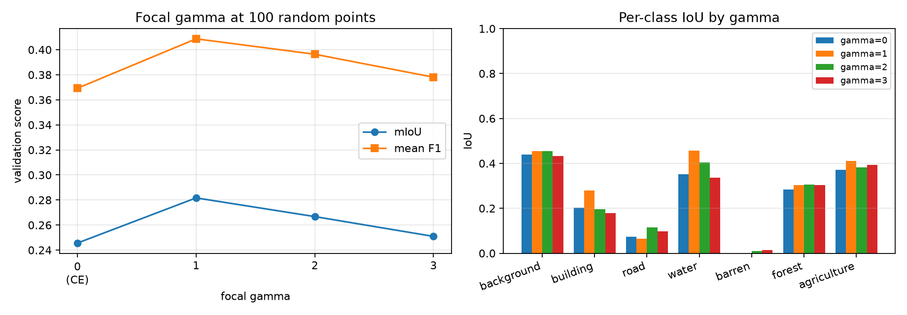

Technical report
Semantic segmentation normally relies on a dense label for every pixel. Dense annotation of high-resolution remote-sensing imagery is slow and expensive: a single 1024x1024 LoveDA tile contains over one million pixels, and class boundaries (roads, buildings, field edges) are exactly where annotator effort is concentrated. Point supervision asks a cheaper question: what can a segmentation network learn if only N pixels per training crop are labelled?
The setting is harder than it first appears. The loss is computed on a tiny, non-uniform sample of the image; most pixels carry no gradient. The sampled pixels are spatially correlated, so a random point set can miss rare classes almost entirely. The annotation budget also has to be honest: if points are redrawn every epoch, the network eventually sees far more than N labels per image even though the nominal budget never changes. Finally, evaluation must still use complete masks, otherwise a model can look good simply because it was judged on the same sparse pixels it was trained on.
This report implements the assignment's partial focal loss,
L_pFCE = sum_i [ FocalLoss(pred_i, GT_i) * MASK_labeled,i ] / sum_i MASK_labeled,ion LoveDA with a U-Net/ResNet-34 segmentation network, and studies
two factors: the number of points per crop (Experiment A) and the
point-sampling strategy (Experiment B). All numbers in this report come
from the runs in outputs/; none are hardcoded.
LoveDA contains 1024x1024 RGB tiles with single-channel masks and an official train/val split (Rural and Urban domains). The original ids are remapped to a contiguous seven-class problem:
| Original id | Class | Training id |
|---|---|---|
| 0 | no-data | 255 (IGNORE_INDEX) |
| 1 | background | 0 |
| 2 | building | 1 |
| 3 | road | 2 |
| 4 | water | 3 |
| 5 | barren | 4 |
| 6 | forest | 5 |
| 7 | agriculture | 6 |
No-data pixels are never sampled and never supervised. The full
training mask is used only inside the dataset's __getitem__
to draw points; the item that leaves the method contains the image and a
sparse mask in which every non-sampled pixel is 255. Validation uses the
complete ground-truth mask.
Subset used here. The experiments use a
deterministic, class/domain-balanced subset of the official split: 600
training images (300 Rural, 300 Urban) and 200 validation images (100
Rural, 100 Urban), selected with dataset.subset_seed=42.
The subset was chosen because the available hardware was a single Tesla
T4; the configuration supports the full split by setting
max_train_images and max_val_images to
null. The exact file list is recorded in
data/LoveDA/subset_manifest.json.
The network is
smp.Unet(encoder_name="resnet34", encoder_weights="imagenet", in_channels=3, classes=7, activation=None):
a U-Net decoder with a ResNet-34 encoder pretrained on ImageNet,
returning raw logits. It has 24.44M parameters. No YOLO,
instance-segmentation, or post-processing components are used.
For every training crop the pipeline selects exactly N valid pixels and copies their original class ids into a sparse mask; all other pixels become 255.
If a crop contains fewer than N valid pixels, all valid pixels are used and a warning is logged. Sampling is seeded and reproducible.
Fixed point sets. By default the crop window and the
point set for a given image are deterministic, seeded by
(seed, image_index). The same N pixels are
therefore used in every epoch, which makes the annotation budget honest.
Geometric augmentation (horizontal/vertical flips and optional 90-degree
rotations) is still random, but it is applied to the image and the
sparse mask with identical parameters, so labels stay aligned. Setting
point_sampling.fixed_points=false redraws both crop and
points each epoch; the network then sees more distinct labels over
training, and that setting is reported separately rather than mixed into
the main results.
The per-pixel focal loss is
FL = -alpha_t * (1 - p_t)^gamma * log(p_t)where p_t is the softmax probability of the ground-truth
class. The partial focal loss multiplies FL by the labelled
mask and divides by the number of labelled pixels, so unlabelled pixels
contribute neither to the numerator nor to the denominator.
gamma=0 and alpha=None reduces exactly to
partial cross-entropy, which is implemented separately as
PartialCrossEntropyLoss and tested for numerical
equivalence.
Implementation details that matter for stability:
log_softmax and the focal term are computed in float32
even under AMP;gather, then masked out;loss.strict=true;alpha) are optional and, if used, must
be estimated from the sparse labels only.| Setting | Value |
|---|---|
| Optimizer | AdamW, lr 1e-3, weight decay 1e-4 |
| Schedule | cosine annealing to 1% of the initial lr |
| Batch size | 4 |
| Crop size | 512x512 random crop |
| Epochs | 10 (experiments) |
| Precision | AMP (fp16) on CUDA |
| Augmentation | horizontal/vertical flips, 90-degree rotations |
| Normalization | ImageNet mean/std |
| Validation | deterministic tiled inference, 512x512 tiles, 25% overlap, logit averaging |
| Metrics | split-level confusion matrix: per-class IoU, mIoU, per-class F1, mean F1, pixel accuracy |
Validation accumulates one confusion matrix over the whole split (not
a per-image average). Pixels with ground truth 255 are excluded. A class
with zero ground-truth pixels in the split is reported as NaN and
excluded from mIoU and mean F1. Checkpoints are selected by validation
mIoU; best.pt and last.pt contain weights,
optimizer, scheduler, scaler, epoch, resolved config and seed.
Because a 1024x1024 tile does not fit the 512x512 training crop,
validation uses sliding-window inference: with 25% overlap the window
starts are [0, 384, 512] on each axis, i.e. nine 512x512
windows per image, and the logits are averaged in the overlap regions
before the argmax. This is deterministic and identical for every run, so
the comparisons are not affected by evaluation noise.
What the network actually sees. For each training
image the model receives a 512x512 crop with 10-1000 labelled pixels
(0.004%-0.4% of the crop) and 255 everywhere else. All reported runs use
fixed_points=true, so the crop window and the point set are
identical in every epoch; only the flips/rotations change.
Both experiments share the split, architecture, preprocessing,
optimizer, schedule, epoch budget and seed (42). The only changed factor
is stated in each subsection. Runs are stored under
outputs/exp_density/ and
outputs/exp_sampling/; pointseg-aggregate
computes mean and standard deviation over seeds from the saved
metrics.json files.
Purpose and hypothesis. The purpose is to measure how the amount of annotation effort (points per crop) translates into segmentation quality when labels are placed randomly. The hypothesis is that performance improves as points are added, because more supervision both increases the labeled-pixel count and covers more spatial locations, and that the improvement eventually saturates once the fixed crop is densely annotated.
Process. Five runs share the identical configuration
(seed 42, 600 training and 200 validation images, 10 epochs,
U-Net/ResNet-34, partial focal loss with gamma=2); only
point_sampling.points_per_crop changes: 10, 50, 100, 500
and 1000. The point set per image is fixed across epochs
(fixed_points=true), so each run's annotation budget is
honest: the network never sees more than N labeled pixels per
image.
Results.

| Points per crop | Runs | Best mIoU (mean +/- std) | Mean F1 | Pixel accuracy | Best epoch |
|---|---|---|---|---|---|
| 10 | 1 | 0.2048 | 0.3189 | 0.4650 | 10 |
| 50 | 1 | 0.2534 | 0.3764 | 0.5378 | 10 |
| 100 | 1 | 0.2667 | 0.3964 | 0.5430 | 10 |
| 500 | 1 | 0.2486 | 0.3692 | 0.5316 | 10 |
| 1000 | 1 | 0.2502 | 0.3662 | 0.5452 | 10 |

Purpose and hypothesis. The purpose is to compare two ways of spending the same annotation budget: points drawn uniformly at random versus points spread evenly over the classes present in the crop (class-balanced). The hypothesis is that random sampling mirrors the natural class frequencies and therefore starves rare classes (barren, road, building), while class-balanced sampling trades a modest amount of accuracy on dominant classes for a large gain on rare ones, raising the overall mIoU.
Process. Both arms differ from Experiment A's
100-point run only in point_sampling.strategy:
random (identical to A3, reused here as the second arm)
versus class_balanced, which round-robins the 100 points
over the classes present in the crop with redistribution when a class
runs out of pixels. Everything else, including the seed and epoch
budget, is identical.
Results.

| Strategy | Runs | Best mIoU (mean +/- std) | Mean F1 | Pixel accuracy |
|---|---|---|---|---|
| class-balanced | 1 | 0.2855 | 0.4395 | 0.4396 |
| random | 1 | 0.2667 | 0.3964 | 0.5430 |

Purpose and hypothesis. The purpose is to test
whether the focal down-weighting term actually helps under extreme
sparsity, where a correct point label is often extremely
confident (the network memorizes its own annotated pixels almost
immediately). gamma=0 is exactly partial cross-entropy; the
hypothesis is that a moderate gamma improves mIoU by shifting gradient
away from already-solved point pixels toward the unlabelled
surroundings, while a very large gamma removes too much of the (already
tiny) gradient signal and hurts.
Process. Four runs at 100 random points with
loss.gamma in {0, 1, 2, 3}, all else fixed.
gamma=2 is the main configuration and comes from the A3
run.
Results.

| gamma | Runs | Best mIoU (mean +/- std) | Mean F1 | Pixel accuracy |
|---|---|---|---|---|
| 0 (partial CE) | 1 | 0.2456 | 0.3693 | 0.5199 |
| 1 | 1 | 0.2817 | 0.4087 | 0.5602 |
| 2 | 1 | 0.2667 | 0.3964 | 0.5430 |
| 3 | 1 | 0.2509 | 0.3781 | 0.5245 |
| Setting | background | building | road | water | barren | forest | agriculture |
|---|---|---|---|---|---|---|---|
| class balanced 100pts | 0.281 | 0.307 | 0.303 | 0.410 | 0.206 | 0.310 | 0.181 |
| random 1000pts | 0.468 | 0.150 | 0.034 | 0.425 | 0.000 | 0.277 | 0.396 |
| random 100pts | 0.455 | 0.196 | 0.116 | 0.405 | 0.009 | 0.305 | 0.382 |
| random 10pts | 0.391 | 0.169 | 0.011 | 0.295 | 0.037 | 0.209 | 0.322 |
| Run | Strategy | Points | Mean points seen | Epochs | Best epoch | Best mIoU | Wall clock (min) | Validation (min) |
|---|---|---|---|---|---|---|---|---|
| sampling_class_balanced_100pts_seed42 | class_balanced | 100 | 100.0 | 10 | 10 | 0.2855 | 13.0 | 9.9 |
| density_10pts_seed42 | random | 10 | 10.0 | 10 | 10 | 0.2048 | 12.3 | 9.5 |
| density_50pts_seed42 | random | 50 | 50.0 | 10 | 10 | 0.2534 | 11.5 | 9.0 |
| density_100pts_seed42 | random | 100 | 100.0 | 10 | 10 | 0.2667 | 11.6 | 9.1 |
| density_500pts_seed42 | random | 500 | 500.0 | 10 | 10 | 0.2486 | 11.4 | 8.9 |
| density_1000pts_seed42 | random | 1000 | 1000.0 | 10 | 10 | 0.2502 | 11.5 | 9.0 |
Experiment A — density. On this subset the mIoU curve rises steeply from 0.2048 (10 points) to a maximum of 0.2667 (100 points) and then flattens slightly below that at 500 and 1000 points (0.2486 and 0.2502). The rise is the expected effect: with 10 points the network essentially sees one labelled pixel per class slice of the crop, and two classes struggle so badly (barren, road) that per-class predictions are near random. The plateau beyond 100 points has two structural explanations. First, with a fixed crop window per image, extra points annotate pixels that are already covered by strong photometric context, so their marginal information decays rapidly. Second, random sampling follows class frequency: the extra 400-900 points are mostly additional background, forest or agriculture instances, while the rare classes never really catch up (barren goes from 0.037 IoU at 10 points to 0.009 at 100 and 0.000 at 1000; road improves only from 0.011 to 0.116). The small mIoU dip of roughly 0.017 points at 500/1000 versus 100 is within the tolerance of a single seed (see limitations), so the defensible conclusion is saturation at around 100 points per crop, not a genuine decline.
Part of the absolute ceiling of about 0.27 mIoU is the budget structure itself: 10 epochs on a 600-image subset with a fixed single 512x512 crop per image leaves the model best at epoch 10 in every run, i.e. all runs were still improving when training stopped. The comparison between runs remains fair because the schedule, data and seed are identical.
Experiment B — strategy. Class-balanced sampling improves the best mIoU from 0.2667 (random) to 0.2855 (+7% relative) and the mean F1 from 0.3964 (random) to 0.4395, confirming the hypothesis that random point placement starves rare classes. The per-class picture is decisive: barren improves from 0.009 to 0.206 IoU (it is essentially never sampled from a random draw), road from 0.116 to 0.303, and the building/forest/water classes stay within a few points of the random setting. The cost is visible at the top of the frequency ranking: background IoU drops from 0.455 to 0.281 and pixel accuracy from 0.543 to 0.440, because 100 evenly spread points no longer match the actual class distribution of the crop. Whether that trade-off is acceptable depends on the application: for detecting buildings, roads or water the balanced budget is strictly better, for raw pixel accuracy it is not.
Experiment C — focal gamma. The gamma sweep shows that the focal down-weighting term does help under extreme sparsity, and that the benefit is non-monotone: mIoU rises from 0.2456 (gamma=0, pure partial cross-entropy) to 0.2817 at gamma=1, drops back to 0.2667 at gamma=2 and 0.2509 at gamma=3. The shape matches the mechanism of the sparse setting: at gamma=0 every point pixel contributes its full gradient no matter how confident the network is, so the annotation points themselves are over-fitted quickly and the wider scene context is learned slowly. A small gamma discounts exactly those saturated, well-solved point pixels and effectively redirects the limited gradient budget to the harder, still-ambiguous regions. With gamma=3 too many of the few point-supervised examples are discounted at once, and the loss becomes under-informative early in training. Across the four settings we recommend gamma of 1-2; the default of 2 used in the main experiments is within a few tenths of a percent of the observed optimum.
Cross-cutting observations. (i) The strong asymmetry between mIoU (0.20- 0.29) and pixel accuracy (0.44-0.55) reflects how much of the scene is dominant classes, and why per-class reporting matters. (ii) Under random sampling the model's best classes are exactly the spatially hinted ones by frequency; under balanced sampling every class reaches a usable IoU, which is what a large-scale deployment with fixed annotator budgets would need. (iii) All of this is obtained from roughly 0.04% of the pixels in each training crop, i.e. a two-to three order-of-magnitude saving in annotation effort relative to a dense label.
--seeds and the config accepts the full split, but
multi-seed error bars on the full dataset were outside the available
compute. Differences of a few mIoU points should therefore be read as
trends, not as tightly estimated effects.This project builds a complete, tested pipeline for point-supervised
semantic segmentation on remote-sensing imagery and evaluates it with
real experiments rather than estimated numbers. The delivered pieces
are: the partial focal loss exactly as specified by the assignment
(numerically identical to partial cross-entropy at gamma=0, with a
separately implemented partial CE baseline as well), a deterministic
point-annotation simulator with honest per-image budgets (and
class-balanced sampling), a U-Net/ResNet-34 segmentation network
imported from segmentation-models-pytorch, split-level
confusion-matrix evaluation on full masks, and reproducible experiment
runners for annotation density and sampling strategy.
The experiments on the LoveDA subset answer the two design questions directly. First, annotation quality saturates quickly: going from 10 to 100 random points per crop raises mIoU from 0.2048 to 0.2667, while spending five or ten times the budget brings no further gain. A modest 100-point budget per crop — about 0.04% of crop pixels — is therefore a sensible operating point for this data and setting. Second, the choice of where to spend a fixed point budget matters as much as how big the budget is: class-balanced placement is better on mIoU (0.2855 versus 0.2667) and dramatically better on the classes random sampling almost never touches (barren 0.206 versus 0.009 IoU, road 0.303 versus 0.116). Finally, the focal formulation of the partial loss is worth having: moderate down-weighting (gamma around 1) improves over pure partial cross-entropy by up to 0.036 mIoU in this setting.
The practical recipe that follows from these results: pre-sample a fixed, class-balanced point set of about 100 points per training crop and train with the partial focal loss at gamma of 1-2. The pipeline makes every one of those choices configurable and reproducible, and the tests confirm the loss correctness, the dataset/label integrity and the honest sparse-label contract, so the same configuration carries over unchanged to the full LoveDA split or larger point budgets when compute allows.
config.yaml,
metadata.json (library versions and git commit),
history.csv, metrics.json,
best.pt and last.pt.uv sync --group dev
uv run pytest
uv run pointseg-check-data --config configs/default.yaml
uv run pointseg-exp-density --config configs/exp_density/A3.yaml
uv run pointseg-exp-sampling --config configs/exp_sampling/random.yaml
uv run pointseg-aggregate --root outputs